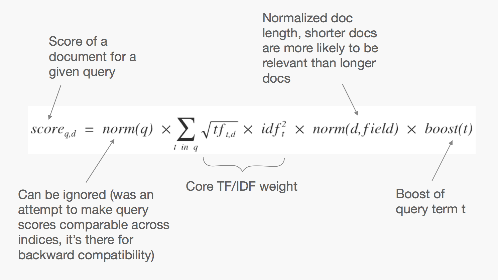

Elasticsearch
Distributed full-text search
Tim Van Laer
Agenda
- Wat is Elasticsearch?
- Iets over Lucene
- Demo: KBCS Research Documents
- Index en Search API
- In productie
Wat is Elasticsearch?
- Document oriented search engine
JSON based, Apache Lucene - Schema free
- Distributed
Scales Up + Out, Highly Available - Multitenancy
Dynamisch aanmaken en verwijderen van indices - API centric & RESTful
Wat kan Elasticsearch?
Zoeken
Gestructureerd en ongestructureerd
Analyse
In near realtime

Inverted Index
| Token | Doc Freq. | Postings Doc Ids |
|---|---|---|
| Anthony | 2 | 1, 2 |
| Brutus | 1 | 5 |
| Caesar | 2 | 2, 3 |
| Calpurnia | 2 | 4, 5 |
Indexing
Index a document
Buffer
d
d
d
Lucene flush
d
d
d
Segment
Segment
Segment
Segments & Search
- Sequentiele zoekopdracht
- Soft deletes
- Segmenten zijn duur, af en toe mergen
Demo: KBCS Research Documents
- Resultaat
- PDF verwerking
- Mapping
- Zoekopdracht
Zoeken en vinden
Analyzer
Analyzer
Tokenizer
standard, keyword, letter, whitespace, regex…
Token Filter
lowercase, stopword, ngram, shingle, stemming, phonetic, asciifolding, elision, synonym, length…
Analyzer config
{"settings": {
"analysis": {
"analyzer": {
"nl_idx_analyzer": {
"type": "custom",
"tokenizer": "whitespace",
"filter": ["trim", "pdf_word_parts","short_words","pdf_unique_tokens","lowercase","nl_stop","asciifolding"]
}
},
"filter": {
"nl_stop": {
"type": "stop",
"stopwords": ["_dutch_"]
},
"pdf_word_parts": {
"type": "pattern_capture",
"preserve_original": true,
"patterns": [
"(\\p{Ll}+|\\p{Lu}\\p{Ll}+|\\p{Lu}+)",
"(\\S+)[^a-zA-Z0-9]+",
"(\\w+)"
]
},
"pdf_unique_tokens": {
"type": "unique",
"only_on_same_position": true
},
"short_words": {
"type": "length",
"min": 3
}
}
}
}}
Analyzers Demo
Relevantie
Term Frequency
Inverse Document Frequency
Inverse Document Frequency
Lucene Ranking Formula
Explaining
TODO explain API voorbeeld (p113)In productie
Master node election
minimum_master_nodes = {quorum} //quorum = helft + 1Via API toegankelijk bij aanpassing cluster grootte.
Shard Allocation
TODO hoe werkt het?
Awareness
Node Types
- Data Node
- Master Node
- Client Node
- Tribe Node
Cluster health
- green
- yellow
- red
Capacity Planning
Number of shards per index
ES_HEAP_SIZE
De helft van het geheugen van de hostmachine.
Niet meer dan 30Gb
Indien te weinig (OutOfMemory) → meer nodes
SWAP nooit
bootstrap.mlockall = trueulimit -l unlimited(Enkel *NIX)
Let op, dit kan de JVM doen crashen bij te weinig geheugen.
Hardware
JVM
OpenJDK of OracleJDK
7 of hoger
En niet 7u25 en 7u51
Xms = Xmx
HTTP
Long live http connections (nginx)
Marvel
'Vergeten' features
- Geolocation support
- Aggregations
- Document relations: Nested fields - Parent/Child documents
- Warmer API
- Percolation API
- Suggestions
- Snapshot/Restore
- Geen 'Write Amplification' op SSDs